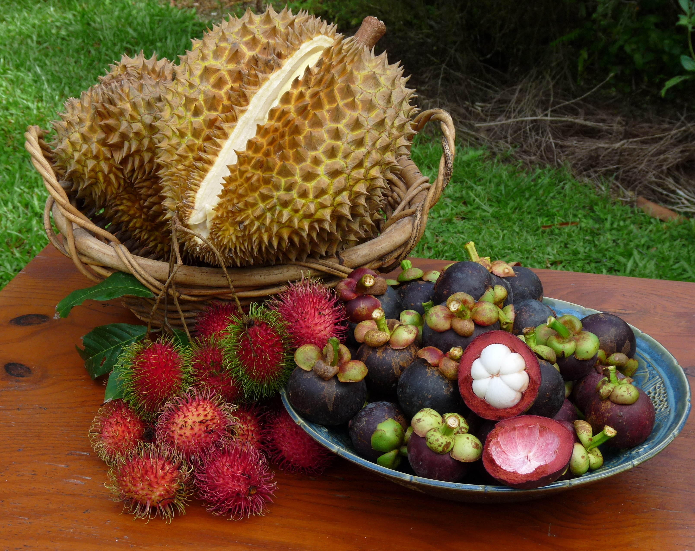
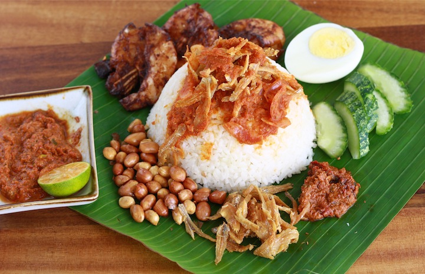
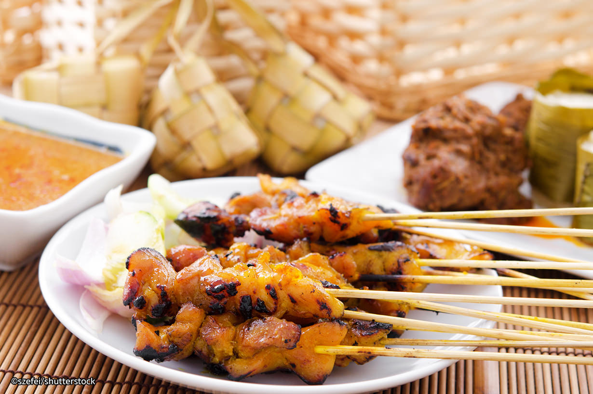
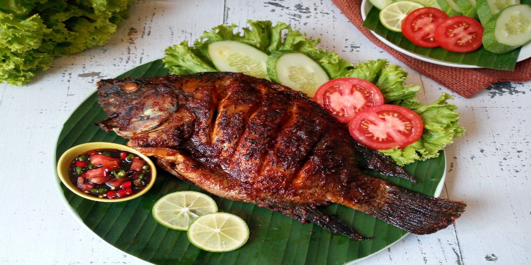

To know Malaysia is to love Malaysia - a bubbling, bustling melting-pot of races and religions where Malays, Indians, Chinese and many other ethnic groups live together in peace and harmony. Our multiculturalism has made Malaysia a gastronomical paradise and home to hundreds of colourful festivals. It's no wonder that we love celebrating and socialising. As a people, Malaysians are very relaxed, warm and friendly.
Geographically, Malaysia is almost as diverse as its culture. 11 states and 2 federal territories (Kuala Lumpur and Putrajaya) form Peninsular Malaysia which is separated by the South China Sea from East Malaysia which includes the 2 states (Sabah and Sarawak on the island of Borneo) and a third federal territory, the island of Labuan.
One of Malaysia's key attractions is its extreme contrasts which further add to this theme of ‘diversity’. Towering skyscrapers look down upon wooden houses built on stilts while five-star hotels sit just metres away from ancient reefs.
Rugged mountains reach dramatically for the sky while their rainforest-clad slopes sweep down to floodplains teeming with forest life. Cool highland hideaways roll down to warm, sandy beaches and rich, humid mangroves.
Malaysia is located in the center of Southeast Asia, a rainforest zone below the equatorial belt that teems with the wonders of nature. The amazing wildlife species found in this region have long been the fascination of researchers and explorers around the world. Divided between Peninsular Malaysia in the west and North Borneo in the east, its natural heritage has been the subject of documentaries and continues to yield astounding discoveries today. Composed primarily of rainforest across lowland and mountain regions, Malaysia also has a wealth of limestone formations, mangrove swamps, coral reefs and spectacular caves to discover.

Malaysia is a fruit-enthusiasts' paradise. The tropical climate creates a luxuriant plant life and produces a wide and remarkable diversity of edible and succulent fruit. Located on the Malaysian Peninsula and part of the island of Borneo, Malaysia is blessed with a vibrant tropical climate where perennial heat and abundant rainfall permit a wide variety of delicious fruit to flourish.

No visitors will leave Malaysia without tasting our very own Nasi Lemak. Hot cooked rice with pandan aroma steamed with coconut cream goes heavenly well with sizzling spicy sauce or “sambal”. Generous sprinklings of roasted peanuts and salty dried anchovies with a hard boiled egg perfect this dish. A platter of everything good all wrapped up in banana leaves to further enhance its unique taste. Nasi Lemak is truly a national heritage of Malaysia.

Follow the aroma of sweet, barbequed meat as you walk on the street and when you see a man or woman fanning the grill at a hawker stall, go for it! Satay is a Malay food made up from meats that are marinated, skewered and grilled on sticks and served with delicious peanut sauce. Found in restaurants, food courts and night markets throughout every state in Malaysia, popular kinds of Satays are usually made with beef, chicken and mutton, however, different regions in Malaysia have developed their own unique Satay recipes.

Ikan bakar are various kinds of popular Maritime Southeast Asian dishes, prepared with charcoal-grilled fish or other forms of seafood, notable in Indonesian and Malaysian cuisines. Ikan bakar literally means "burned fish" in Malaysian. The barbecued fish is one of the classic Malaysian dish